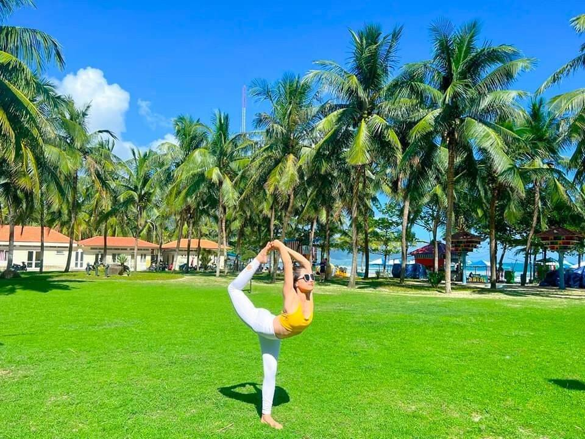

Yoga người lớn · Yoga và lối sống
Yoga cho lá phổi khỏe và sức đề kháng
Mỗi ngày mình thở khoảng hai mươi nghìn lần. Gần như không lần nào để ý. Bài này là về những hơi thở ấy, và về cách sống giúp cơ thể tự đứng vững hơn mỗi lần trời trở gió.
“Cô ơi, cứ giao mùa là em lại ho.”
“Con ốm, mẹ ốm theo. Cả nhà thay nhau nghỉ.”
Mỗi năm đến tháng mười, tháng mười một, cô nghe những câu này nhiều hơn hẳn. Trời hanh, rồi nồm, rồi lạnh. Có người ốm xong một tuần, ba tuần sau vẫn còn ho khan, leo cầu thang thấy mệt.
Ở lớp, cô hay để ý một điều nhỏ. Nhiều người thở bằng miệng mà không biết. Vai nhô lên mỗi lần hít. Bụng gồng cứng.
Cô không có bài thuốc nào. Cô chỉ mời mọi người khép miệng lại, đặt tay lên bụng. Và thở bằng mũi. Chậm thôi.
Chăm sóc lá phổi không chỉ là chuyện của người đã có bệnh. Nó là chuyện của mỗi ngày: mình thở thế nào, ngồi thế nào, ngủ bao lâu, ăn gì, sống gần bụi khói ra sao, và mang bao nhiêu căng thẳng trong người. Sức đề kháng cũng vậy. Không có một món ăn hay một tư thế nào “tăng miễn dịch” ngay được.
Vì thế Sophia không đưa ra một bài tập thần kỳ. Bài này đi qua cả lối sống, trên năm thể: thân, khí, tâm, trí và tinh thần. Hơi thở được nói nhiều nhất, vì với phổi, hơi thở là nhà. Tư thế là một phần nhỏ, giúp lồng ngực mở ra. Và cuối bài có phần cô mong ai cũng đọc kỹ: khi nào cần đi khám.

- Tự nhìn lại
- Phổi và đề kháng
- Phục hồi trên năm thể
- Hơi thở
- Một ngày cho lá phổi
- Chuỗi 15 phút
- Khi đang ốm
- Khi nào gặp bác sĩ
Hơi thở của mình dạo này thế nào?
Đánh dấu những điều đúng với mình. Đây không phải bài kiểm tra y khoa. Chỉ là một lần dừng lại, nghe xem cơ thể đang nói gì.
Lá phổi và sức đề kháng làm việc cùng nhau thế nào
👃
Mũi là cánh cửa đầu tiên
Lông mũi và lớp nhầy giữ lại bụi, vi khuẩn. Hốc mũi làm ấm, làm ẩm không khí trước khi xuống phổi. Các xoang còn tiết ra một chất khí là nitric oxide, có ích cho đường thở. Thở bằng miệng là đi vòng qua tất cả những thứ ấy.
🫁
Cơ hoành và dáng ngồi
Cơ hoành là cơ thở chính, nằm dưới phổi như một chiếc ô. Khi ngồi gù lâu, bụng gồng, cơ hoành ít được xuống hết. Hơi thở dồn lên ngực, ngắn, các cơ cổ vai phải làm thay. Phần đáy phổi ít được thông khí.
🛡️
Đề kháng nghe theo nhịp sống
Hệ miễn dịch không làm việc một mình. Nó chịu ảnh hưởng của giấc ngủ, bữa ăn, vận động và cả nỗi lo. Ngủ ít, căng thẳng kéo dài thì hàng rào ấy mỏng đi. Không cần một thứ gì đặc biệt. Cần một nhịp sống đều.
Có hai nghiên cứu cô hay nhớ. Năm 1991, nhóm của Sheldon Cohen nhỏ virus cảm lạnh vào mũi gần bốn trăm người khỏe mạnh. Ai đang căng thẳng nhiều thì dễ bị cảm hơn hẳn (Cohen và cộng sự, New England Journal of Medicine, 1991). Hơn hai mươi năm sau, cũng nhóm ấy đo giấc ngủ: người ngủ dưới sáu tiếng mỗi đêm dễ bị cảm gấp khoảng bốn lần người ngủ trên bảy tiếng (Prather và cộng sự, Sleep, 2015).
Đọc xong, cô thấy nhẹ cả người. Muốn ít ốm vặt, việc đầu tiên không phải là mua thêm gì. Là ngủ. Là bớt gồng. Là thở cho tử tế.
Người hay vận động thường ít bị nhiễm khuẩn hô hấp trên hơn: một nghiên cứu theo dõi khoảng một nghìn người lớn trong mùa thu đông thấy người vận động từ năm ngày mỗi tuần có số ngày ốm ít hơn khoảng 40% so với người ít vận động (Nieman và cộng sự, British Journal of Sports Medicine, 2011). Một thử nghiệm ngẫu nhiên khác cho người lớn tập thiền chánh niệm hoặc vận động 8 tuần: cả hai nhóm có ít ngày nghỉ ốm vì cảm cúm hơn nhóm đối chứng trong mùa đông sau đó (Barrett và cộng sự, Annals of Family Medicine, 2012). Các nghiên cứu này đo cả nhóm người, không hứa riêng với ai, nhưng chiều hướng rất rõ.
Phục hồi trên cả năm thể
Theo yoga, con người có năm lớp nối với nhau: thân, khí, tâm, trí và tinh thần (bài Năm thể của con người kể kỹ hơn). Lá phổi nằm ở thân, nhưng hơi thở là thể khí. Và hơi thở lại đổi theo tâm: lo thì thở gấp, buồn thì thở dài, sợ thì nín thở. Nên chăm phổi chỉ bằng phổi thì chưa đủ.
🌿 Thân
Ngủ đủ, ăn đủ rau và đạm, uống đủ nước. Ngồi thẳng lưng cho cơ hoành có chỗ. Vận động mỗi ngày, có lúc hơi thở nhanh lên một chút. Tránh khói thuốc, cả hít phải từ người khác.
🌬️ Khí
Thở bằng mũi, cả ngày lẫn đêm. Thở bụng, thở chậm. Đây là lớp cô chú trọng nhất. Một hơi thở tốt không cần to, không cần mạnh. Nhẹ, êm, đều.
💗 Tâm
Để ý những lúc mình nín thở: khi đọc tin nhắn, khi con mè nheo, khi bị trễ giờ. Mỗi lần thấy, chỉ cần thở ra một hơi dài. Cảm xúc đi qua được thì hơi thở cũng thoáng.
🧠 Trí
Đổi cách nghĩ về đề kháng. Không phải tìm một thứ uống vào là khỏe, mà là chăm từng ngày. Biết nghỉ khi ốm, không cố gồng đi làm, không tự ý dùng kháng sinh.
✨ Tinh thần
Mỗi ngày một chút thời gian với thiên nhiên. Một hơi thở biết ơn khi thức dậy. Cảm giác được kết nối với người thân. Những điều này nghe xa, nhưng chúng làm nhịp sống êm lại.
Không ai đổi được tất cả trong một tuần. Chọn một điều ở một thể, làm cho đều. Sang tuần thêm một điều. Cân bằng đến từ những việc nhỏ được lặp lại.
Thể khí: thở bằng mũi, chậm và êm
Nếu chỉ được giữ một điều trong bài này, cô sẽ giữ điều này: khép miệng, thở bằng mũi. Lúc ngồi làm việc, lúc đi bộ, lúc ngủ.
Mũi lọc, làm ấm, làm ẩm không khí. Các xoang mũi tiết ra nitric oxide, một chất khí giúp giãn mạch máu ở phổi và có tác dụng chống vi khuẩn, virus trong phòng thí nghiệm (Lundberg và cộng sự, Nature Medicine, 1995). Thở bằng miệng thì không khí lạnh, khô, chưa lọc đi thẳng xuống họng. Sáng dậy khô họng, rát cổ, nhiều khi bắt đầu từ đó.
Trong cuốn Breath (2020), nhà báo James Nestor kể lại lần ông tự bịt mũi, thở hoàn toàn bằng miệng mười ngày trong một thử nghiệm ở Stanford. Ông ngáy nhiều hơn hẳn, ngủ chập chờn, huyết áp tăng, thấy mệt. Đổi lại thở bằng mũi, mọi thứ dần trở lại. Một câu chuyện của một người, không phải bằng chứng cho tất cả. Nhưng ai đã từng nghẹt mũi vài đêm đều hiểu cảm giác ấy.
Thử ngay dưới đây: hít vào 5 nhịp, thở ra 5 nhịp, đều cả hai bằng mũi. Khoảng sáu hơi thở mỗi phút. Bóng vàng lớn lên khi hít, nhỏ lại khi thở ra. Hơi thở không cần sâu hết cỡ. Nhẹ thôi, như sợ làm lay một sợi lông trước mũi.
Mới tập thì chọn 4 và 4. Thấy hụt hơi, chóng mặt thì quay về thở tự nhiên. Nghẹt mũi thì cứ thở nhẹ qua miệng, không sao.
Tổng quan về thở chậm (dưới khoảng 10 nhịp mỗi phút) ghi nhận thở chậm đi cùng tăng hoạt động phó giao cảm, tăng biến thiên nhịp tim, cảm giác thư giãn (Zaccaro và cộng sự, Frontiers in Human Neuroscience, 2018). Đây là trạng thái cơ thể nghỉ ngơi và hồi phục. Một tổng quan các thử nghiệm ngẫu nhiên về yoga và hệ miễn dịch thấy yoga có thể giúp giảm các chỉ dấu viêm trong máu, nhưng các tác giả cũng nói rõ là nghiên cứu còn ít, cần thêm (Falkenberg và cộng sự, Journal of Behavioral Medicine, 2018).
Ngoài nhịp thở đều, bốn cách thở cô hay dùng để chăm đường thở:
Thở bụng
Thở bằng cơ hoành
Một tay để ngực, một tay để bụng. Hít vào bụng phồng nhẹ, tay ngực gần như yên. Thở ra bụng xẹp. Cơ hoành xuống hết thì đáy phổi được thở. Xem bài Thở bụng.
Tiếng ong
Bhramari
Hít vào bằng mũi. Thở ra, môi khép, ngân “mmm” trầm và nhẹ. Một nghiên cứu nhỏ đo thấy khi ngân như vậy, lượng nitric oxide ở mũi tăng khoảng mười lăm lần so với thở ra im lặng (Weitzberg và Lundberg, 2002). Xem bài Thở tiếng ong.
Thở luân phiên
Nadi Shodhana
Hít mũi trái, thở ra mũi phải, rồi ngược lại. Năm đến mười vòng, không nín thở. Tập lúc mũi thông. Nghẹt một bên thì cứ thở nhẹ, đừng cố. Xem bài Thở luân phiên mũi.
Thở ra qua môi khép
Thở môi chúm
Hít vào bằng mũi hai nhịp. Thở ra qua môi hơi chúm như thổi nến, bốn nhịp. Cách này hay được dùng cho người hụt hơi khi leo dốc, leo cầu thang, kể cả trong phục hồi chức năng hô hấp.
Hơi thở đại dương
Ujjayi
Hơi khép thanh quản, thở ra có tiếng như sóng biển xa. Giúp hơi thở dài và đều trong lúc tập tư thế. Xem bài Hơi thở Ujjayi.
Thở bốn thì
Sama Vritti
Hít, giữ, thở ra, giữ, mỗi thì bằng nhau. Giữ nhẹ thôi. Người có bệnh phổi, tim mạch thì bỏ phần giữ hơi. Xem bài Hơi thở bốn thì.
Các phép thở mạnh và nhanh như Kapalabhati hay Bhastrika, cô không dùng khi đang ốm, đang sốt, đang ho, đang lên cơn hen. Cũng không dùng cho người cao huyết áp, bệnh tim, đang mang thai. Lá phổi đang mệt thì cần được nghỉ, không cần được “tẩy”. Có cả một mục Các phép thở trong Yoga để chọn bài theo nhu cầu.
Một ngày cho lá phổi khỏe
Đây là phần cô thấy quan trọng nhất. Một buổi tập mỗi tuần khó bù lại sáu ngày ngủ ít, ngồi gù, hít khói bụi. Dưới đây là một ngày Sophia hay gợi ý. Không cần làm hết. Chọn hai điều dễ nhất, giữ cho đều, rồi thêm dần.
- Khi vừa thức dậyUống một cốc nước ấm. Mở cửa sổ một lúc nếu không khí ngoài trời sạch. Ngồi thở chậm bằng mũi năm hơi trước khi cầm điện thoại.
- Xem chất lượng không khíNhững ngày bụi mịn cao, cô dời buổi tập ra trong nhà, đóng cửa, đeo khẩu trang khi ra đường. Không cần lo quá, chỉ cần để ý.
- Buổi sángRa ngoài ánh nắng mười lăm, hai mươi phút. Đi bộ, nhìn cây. Ánh sáng ban ngày giúp nhịp ngủ thức đều, và giấc ngủ đêm sau sâu hơn.
- Bữa ănNhiều rau, củ, quả có màu. Ăn đủ đạm. Bát canh nóng, chút gừng, chút sả trong những ngày lạnh. Uống đủ nước để lớp nhầy đường thở không khô.
- Giữa giờ làmCứ khoảng một tiếng, đứng dậy, vươn tay, mở ngực, thở năm hơi bằng mũi. Rửa tay trước khi ăn, sau khi về nhà.
- Buổi chiềuVận động có sức vừa phải, hơi thở nhanh lên một chút mà vẫn nói chuyện được. Đi bộ nhanh, đạp xe, một buổi yoga. Phổi cũng cần được dùng đến.
- Giao mùaGiữ ấm cổ, ngực, bàn chân khi trời trở lạnh. Không tắm khuya. Phòng ngủ thoáng nhưng không để quạt, điều hòa thổi thẳng vào người.
- Trước khi ngủTắt màn hình sớm. Năm phút thở chậm bằng mũi. Ngủ đủ bảy, tám tiếng. Đây là liều “thuốc bổ” rẻ nhất mà cô biết.
Có một việc cô hay nhắc riêng: tiêm phòng. Vắc xin cúm hằng năm, vắc xin phế cầu cho người lớn tuổi hoặc có bệnh nền, là những việc y khoa đã có bằng chứng rõ. Hỏi bác sĩ xem mình cần gì. Yoga và vắc xin không đứng ở hai phía. Chúng đi cùng nhau.
Chuỗi 15 phút mở lồng ngực
Chuỗi này không chữa bệnh phổi. Nó giúp lồng ngực, xương sườn, vai và lưng trên mềm ra, để hơi thở có chỗ đi. Bắt đầu đứng, rồi thấp dần, chậm dần, kết thúc nằm yên. Tập buổi sáng hoặc buổi chiều đều được. Cả chuỗi thở bằng mũi. Thấy đau, nhói, tê, chóng mặt thì dừng thế đó.
Đứng núi, thở cùng hai tay1 phút
Tadasana, Urdhva Hastasana
Đứng hai bàn chân rộng bằng hông. Hít vào bằng mũi, hai tay đưa sang ngang rồi lên cao. Thở ra, tay hạ xuống. Sáu đến tám lần. Để tay đi theo hơi thở, không để hơi thở chạy theo tay.
🌱 Vai đau thì chỉ đưa tay ngang vai. Chóng mặt thì đứng cạnh tường.
Mèo và bò thật chậm1 phút
Marjaryasana, Bitilasana
Chống tay và gối. Hít vào võng lưng nhẹ, ngực mở ra phía trước. Thở ra cong lưng, bụng hóp nhẹ. Sáu đến tám vòng. Cảm nhận xương sườn mở ra rồi khép lại như một chiếc đèn lồng.
🌱 Cổ tay đau thì chống trên nắm tay hoặc hạ xuống cẳng tay.
Ngồi mở ngực, đan tay sau lưng1 phút
Mở vai ngồi
Ngồi xếp bằng hoặc ngồi ghế. Đan hai bàn tay sau lưng, hoặc nắm một chiếc khăn. Kéo nhẹ hai bả vai về sau và xuống. Ngực nhô lên, cằm vẫn song song sàn. Thở năm hơi chậm vào phần ngực trên.
🌱 Không ngửa cổ ra sau. Vai cứng thì nắm khăn rộng tay hơn.
Rắn hổ mang nhẹ30 giây, 3 lần
Bhujangasana thấp
Nằm sấp, hai tay đặt dưới vai, khuỷu sát sườn. Hít vào, nâng ngực lên thấp thôi, sức đến từ lưng, tay chỉ đỡ. Thở ra hạ xuống. Cảm nhận phía trước ngực giãn ra, bụng thở vào sàn.
🌱 Đau thắt lưng thì làm Nhân sư: chống cẳng tay. Đang mang thai thì bỏ thế này.
Ngả lưng trên gối, mở ngực2 đến 3 phút
Matsyasana có gối kê
Đặt một chiếc gối dài hoặc chăn gấp dọc sống lưng, ngang bả vai. Nằm ngả lên, đầu kê thêm gối mỏng. Hai tay mở sang hai bên, lòng bàn tay ngửa. Để ngực mở ra một cách thụ động, không cố gì cả.
🌱 Đầu phải được kê, cổ không ngửa gập. Thấy tê tay hay khó chịu ở lưng thì hạ gối thấp xuống.
Vặn mình ngồi nhẹ30 giây mỗi bên
Ardha Matsyendrasana dễ
Ngồi duỗi chân, co gối phải, bàn chân đặt bên ngoài gối trái. Hít vào, lưng dài lên. Thở ra, vặn nhẹ sang phải, tay trái ôm gối. Thở vào phần sườn bên trái đang giãn ra. Rồi đổi bên.
🌱 Vặn từ ngực, không xoắn cổ. Đau lưng nhiều hay đang mang thai thì vặn rất ít.
Tư thế em bé, thở vào lưng1 đến 2 phút
Balasana
Quỳ, ngồi về gót, ngả thân trước, trán chạm thảm hoặc gối kê. Lúc này bụng bị ép nhẹ, nên mỗi hơi hít vào sẽ đi ra sau lưng. Cảm nhận lưng phồng lên khi hít, hạ xuống khi thở ra. Phổi nằm cả phía sau, nhiều người quên mất.
🌱 Đau gối thì kê chăn sau khoeo. Đang mang thai thì mở gối rộng.
Nằm thư giãn, tay trên bụng5 phút
Shavasana
Nằm ngửa, kê gối dưới khoeo. Hai tay đặt lên bụng. Thở bằng mũi, thật chậm. Để bụng tự phồng tự xẹp dưới bàn tay. Làm theo phần thư giãn bên dưới.
🌱 Đang nghẹt mũi thì kê cao đầu một chút, hoặc nằm nghiêng.
Với người bị hen, tổng quan Cochrane gộp 15 thử nghiệm thấy yoga có thể cải thiện chút ít chất lượng sống và triệu chứng, nhưng bằng chứng còn ở mức thấp đến trung bình và chưa rõ tác dụng lên chức năng phổi (Yang và cộng sự, Cochrane, 2016). Với người bệnh phổi tắc nghẽn mạn tính, một phân tích gộp thấy tập yoga giúp đi bộ được xa hơn và cải thiện một số chỉ số thở (Liu và cộng sự, Journal of Thoracic Disease, 2014).
Nói thật: những con số này khiêm tốn. Cô xem yoga là một người bạn đi cùng điều trị, không bao giờ là thứ thay thuốc.
Thư giãn cuối chuỗi
Hai tay trên bụng. Miệng khép, lưỡi nằm yên. Thở bằng mũi.
Cảm nhận không khí mát khi đi vào. Ấm hơn một chút khi đi ra.
Hít vào, bụng nâng tay lên. Sườn hai bên mở ra. Lưng chạm sàn nhiều hơn một chút.
Thở ra, mọi thứ hạ xuống. Không cần làm gì cả.
Thầm cảm ơn hai lá phổi. Chúng đã thở cho mình từ giây đầu tiên, chưa nghỉ ngày nào.
Khi đang ốm hoặc vừa khỏi
Nhiều người hỏi cô: đang cảm có nên tập cho “ra mồ hôi” không. Cô thường trả lời: nghỉ là một phần của tập.
- Sổ mũi, hắt hơi nhẹ, không sốtTập nhẹ được: đi bộ chậm, vài tư thế nằm, thở bụng. Bỏ phép thở mạnh. Thấy mệt hơn thì dừng.
- Sốt, đau mình, ho nhiều, tức ngựcNghỉ hẳn. Ngủ, uống nước, ăn đồ dễ tiêu. Chỉ nằm thở nhẹ nếu thấy dễ chịu. Không tập để “đẩy” bệnh ra.
- Vừa khỏi, còn ho, còn mệtQuay lại từ từ, khoảng một nửa sức cũ. Vài ngày sau tăng dần. Sau những đợt ốm nặng như viêm phổi, cúm nặng, COVID, hỏi bác sĩ trước khi tập lại các bài mạnh.
- Có con nhỏ đang ốmTối ôm con, đặt tay lên lưng con, cùng thở chậm. Mẹ bình tĩnh thì con cũng dễ ngủ hơn. Đi khám cho con theo lời bác sĩ nhi.
Khi nào nên gặp bác sĩ
Yoga và lối sống cân bằng giúp đường thở khỏe hơn mỗi ngày. Nhưng chúng không thay cho chẩn đoán và điều trị y khoa. Cô luôn mong mọi người đi khám khi:
- Khó thở tăng dần, thở nhanh khi nghỉ, môi hoặc đầu ngón tay tím tái, nói không hết câu: gọi cấp cứu 115.
- Đau ngực, nhất là đau lan ra tay, hàm, kèm vã mồ hôi: gọi 115 ngay, đừng chờ.
- Sốt cao trên ba ngày, hoặc sốt kèm khó thở, lơ mơ.
- Ho kéo dài hơn ba tuần, ho ra máu, sụt cân không rõ lý do, đổ mồ hôi đêm.
- Thở khò khè, nặng ngực tái đi tái lại, hay ốm nặng hơn người xung quanh.
- Người hút thuốc lâu năm thấy hụt hơi ngày càng nhiều: nên đo chức năng hô hấp.
Người có hen, bệnh phổi tắc nghẽn mạn tính, bệnh tim: vẫn dùng thuốc như bác sĩ dặn, không tự bỏ hay giảm thuốc khi thấy khá hơn nhờ tập. Mang theo thuốc cắt cơn khi đi tập. Báo cho người hướng dẫn trước buổi học. Tránh tập ngoài trời những ngày lạnh, khô, nhiều bụi.
Đang mang thai, cao huyết áp, tăng nhãn áp, vừa phẫu thuật ngực bụng thì cũng báo trước, để được điều chỉnh tư thế và hơi thở.
Lời nhỏ cuối bài
Hơi thở là việc hiếm hoi trong cơ thể vừa tự chạy, vừa nghe theo mình. Không ai bảo tim đập chậm lại được. Nhưng ai cũng có thể thở chậm lại.
Chỗ ấy, cô nghĩ, là một món quà. Một cánh cửa nhỏ để chăm lại cả cơ thể, cả tâm.
Khép miệng. Đặt tay lên bụng.
Thở bằng mũi. Thật chậm.
🍃 Muốn có một người cùng thở, cùng tập, chậm và đúng cách?
Sophia Yoga có lớp người lớn trực tiếp, lớp Zoom và lớp kèm 1 kèm 1, chú trọng hơi thở và thư giãn. Ai muốn dạy các con thở đúng ngay từ nhỏ, có khóa đào tạo HLV Yoga trẻ em.
Tài liệu tham khảo
- Cohen S., Tyrrell D.A.J., Smith A.P. (1991). Psychological stress and susceptibility to the common cold. New England Journal of Medicine, 325(9).
- Prather A.A., Janicki-Deverts D., Hall M.H., Cohen S. (2015). Behaviorally assessed sleep and susceptibility to the common cold. Sleep, 38(9).
- Nieman D.C. và cộng sự (2011). Upper respiratory tract infection is reduced in physically fit and active adults. British Journal of Sports Medicine, 45(12).
- Barrett B. và cộng sự (2012). Meditation or exercise for preventing acute respiratory infection: a randomized controlled trial. Annals of Family Medicine, 10(4).
- Lundberg J.O. và cộng sự (1995). High nitric oxide production in human paranasal sinuses. Nature Medicine, 1(4).
- Weitzberg E., Lundberg J.O. (2002). Humming greatly increases nasal nitric oxide. American Journal of Respiratory and Critical Care Medicine, 166(2).
- Zaccaro A. và cộng sự (2018). How breath-control can change your life: a systematic review on psycho-physiological correlates of slow breathing. Frontiers in Human Neuroscience, 12.
- Falkenberg R.I., Eising C., Peters M.L. (2018). Yoga and immune system functioning: a systematic review of randomized controlled trials. Journal of Behavioral Medicine, 41(4).
- Yang Z.Y. và cộng sự (2016). Yoga for asthma. Cochrane Database of Systematic Reviews, CD010346.
- Liu X.C. và cộng sự (2014). Effects of yoga training in patients with chronic obstructive pulmonary disease: a systematic review and meta-analysis. Journal of Thoracic Disease, 6(6).
- Nestor J. (2020). Breath: The New Science of a Lost Art. Riverhead Books.
Hình minh họa tư thế do Sophia Yoga tự vẽ. Những câu nói trong bài là điều cô hay nghe ở lớp, không nêu tên học viên. Bài viết chia sẻ kiến thức và kinh nghiệm tập luyện, không thay cho lời khuyên của bác sĩ.